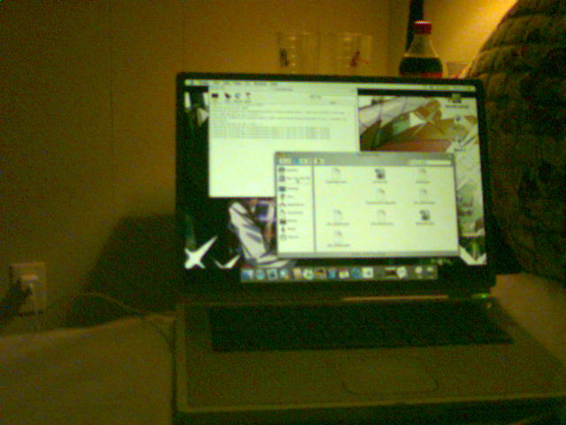

10/4/25 Titanium Powa
A while back, I wrote a blog post discussing PowerBook G4's, and my need to pick one for a travel laptop. The battle came down to my 15" Ryobook, my 12" thingymajig, and the mythical idea of a Titanium Powerbook. At the time, I really wanted one (mostly so I'd have all the cool versions of the powerbook..) but it seemed too far out and expensive, especially coming after VCF.
Well, wanna know whyyyyyy you didn't see that post I wrote? Sadly, due to budget cuts, I can't take a good photo.. but I can take A photo:

Not my best camera, nor framing.. haha... I still haven't set up hosting for high-res photos.. (Still lazy...)
but yea, I got a titanium! my specs are:
2002 PowerBook G4 (DVI/Ivory)
Powerbook 3,4
667MHz G4, 133 MHz System Bus
Radeon 7500 with 32MB vram
512mb Ram
From-Factory airport card!
30gb HDD (robbed from another machine)
Currently on 10.3.5, want to later dualboot with 10.5.
I was looking for a DVI or better PowerBook, and this is literally the ideal spec. I know its not 800MHz, but the included airport already seals the deal, alongside being the model to bring a pretty decent GPU, an L3 cache, dvi obviously, and while still having the old model font... I bought it as a "for parts" machine, being dirty, and in unknown condition. The owner cited they couldn't install, but could boot the installer for 10.5 (which meant it probably worked lol) and that the lcd had a dark spot on the middle bottom. It was around 80 bucks (I know that's a fair bit for this machine, but I did really want it..) and I thought, it doesn't seem bad at all. sure as hell.
When I got it, with a healthy dose of isopropyl and Goo-Gone easily cleaned up the computer. The only real bad scratches that truly annoy me are on the bottom, which "is what it is" to me. I have some white paint chips, slight flaking on the right palm as everybody does, and bad wear on the hinge covers. But that's PERFECTLY ACCEPTABLE!! The "dark spot" is genuinely unnoticable most the time, and probably came from the factory. This was a great buy!!
To me, this design is just ideal. It's not that I don't like the ryobook, but its design always felt boring and uninspired. And honestly a downgrade. In comparison, this design feels sleek, modern, with a perfect screen size, etc etc. The only oddities are the bottom, and the later addition of a cooling plate, but that's minor. I also much prefer the keyboard, even if not completely perfect like the 12" somehow has. And of course, guess what I'm writing this on.

(You mightt wanna right click and open yourself.
Messing with this computer in bed has been bliss.. It's just such a great form factor. This computer isn't still MODERN, per say, but it aged extremely well. Now, I don't have an amazing battery like in the ryobook, but the battery actually does hold enough charge for around 30-ish minutes of basic tasks, and for a startup/restart. Which I'll gladly take (especially if i decide to later rebuild the battery, could be fun).
But unfortunately, while this computer is almost perfect, there is some sadness..
First off, the hinges... Yea... They're hard and strict when opening, loose when closing. Def need to grease and make sure they're all good, I really don't want to have to do a repair. The speakers are DEAD dead. The audio board is fine, but I'd need to do a teardown to the top case to replace it entirely/just replace the speakers. The trackpad is bad, much worse than the aluminums despite similar size. And.. The ports are inconvenient? This is a small complaint, honestly more of a note because I like it sometimes? but since I'm not a huge desk user, the cable management convenience doesnt help me in bed.
But yknow what, small stuff. And fixable! This machine is much nicer to repair than any later one to repair (just 7 screws to access the Hard Drive!) and in my honeymoon period, I really like this machine and look past its flaws.
|